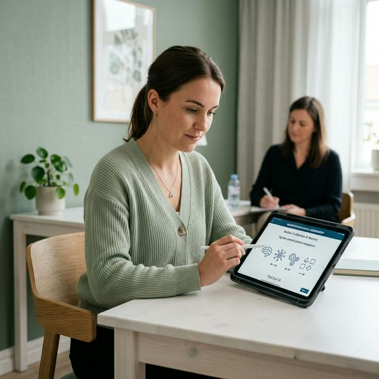

Oferecemos diagnóstico neuropsicológico preciso, triagens online e psicoterapia especializada para cuidar da sua saúde mental de forma humana e sistêmica.
Acolhemos, diagnosticamos e tratamos diversas condições que impactam o seu bem-estar diário, aprendizado e convívio social.


O diagnóstico precoce é fundamental. Responda à escala online e leve os resultados para discussão com um especialista.
Fazer o teste de TEAQuestionário rápido e validado que ajuda a identificar sinais de TDAH em adultos. Não substitui diagnóstico profissional.
Fazer o teste de TDAH
A avaliação é um processo estruturado, humano e altamente investigativo. Entenda detalhadamente cada etapa percorrida.
O primeiro contato clínico guiado por escuta qualificada. Coletamos todo o histórico de vida familiar, desenvolvimento, médico, escolar e ocupacional.
Testes voltados ao rastreio da capacidade de foco mantido, impulsividade, controle inibitório e planejamento através de exercícios lúdicos.
Utilização de blocos de montagem, arranjos de figuras e resolução de problemas lógicos e verbais para mapeamento do quociente intelectual.
Testes práticos para mensurar a retenção auditiva e visual do paciente, incluindo memorização de figuras complexas, palavras e textos.
Avaliação sistemática do vocabulário, compreensão verbal, velocidade de nomeação sob pressão e organização do pensamento.
Exames do processamento motor e mental a partir da cópia de diagramas complexos, percepção de rotação e profundidade.
Escalas científicas para avaliar a presença de depressão, ansiedade atípica, perfis de neurodivergência (TEA) ou déficits sociais.
Fase de análise técnica da psicóloga. Correção estatística rigorosa dos escores e cruzamento com todas as nuances observadas presencialmente.
Explicação ética e acolhedora do Laudo Neuropsicológico impresso com diagnósticos concluídos e direção de futuro de tratamento.